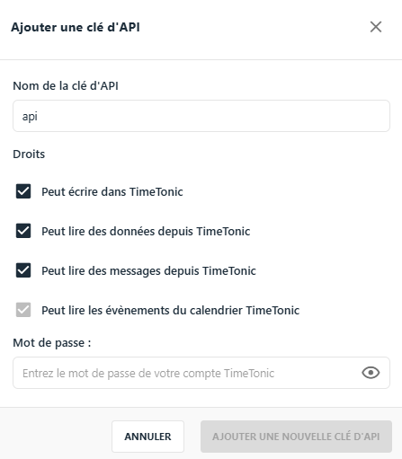
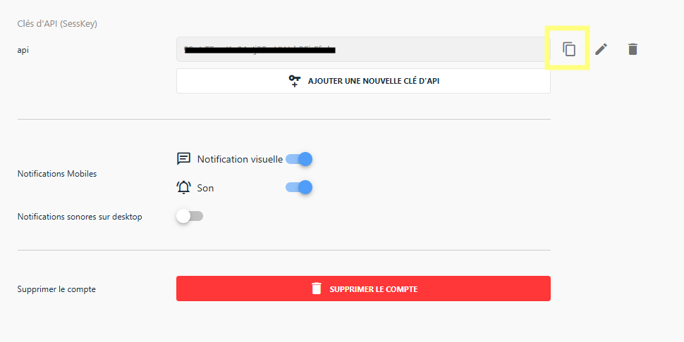
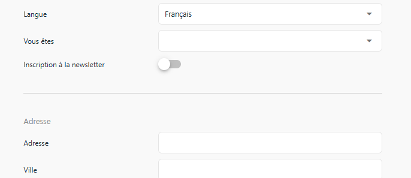
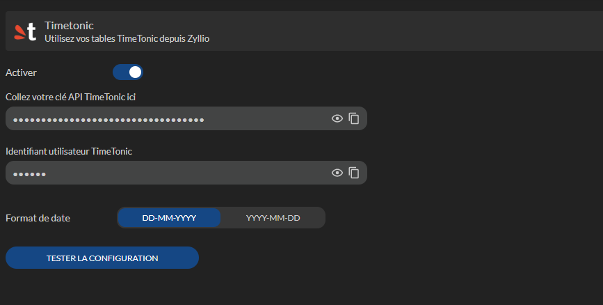

Timetonic
Zyllio vous permet de connecter facilement vos bases de donn�es Timetonic � une application sans avoir besoin de connaissances en programmation.
Gr�ce � cette int�gration, vous pouvez acc�der, visualiser et interagir avec vos donn�es Timetonic en temps r�el, directement depuis votre application.
Configuration
Configuration Timetonic
Avant de commencer � importer vos tables et vues Timetonic, vous devez configurer l'int�gration Timetonic
Voici les �tapes � suivre
- Se connecter � son compte Timetonic
- Acc�der aux param�tres de votre compte

- Ensuite s�lectionnez l�option Param�tres dans le menu de gauche
- Cliquer sur le bouton Ajouter une nouvelle cl� d�API et s�lectionner les options suivants ci dessous

- Valider la cr�ation de la cl� d�API
- Une fois cr�e, cliquer sur le bouton Copier pour copier la cl� d�API

- Notez �galement l�identifiant de votre compte depuis Informations Compte

Configuration Zyllio
- Se connecter � Zyllio
- S�lectionner l�application � int�grer � Timetonic
- S�lectionner l�onglet Settings puis Timetonic
- Activer l�int�gration Timetonic
- Coller la cl� d�API copi�e depuis le portail Timetonic et l�identifiant utilisateur comme suit

Importation de tables et vues Timetonic
Depuis l�onglet Database, cliquer sur l�option Timetonic dans la section Import table � gauche

Ensuite s�lectionner la ou les tables � importer. Cette op�ration peut �tre r�it�r�e pour importer d�autres tables ult�rieurement

Une fois valid�, Zyllio importe l�ensemble des tables s�lectionn�es ainsi que les types de champ et leurs relations. Exemple de 5 tables import�es avec relations

Les champs calcul�s comme les formules, lookup, rollup, et id ... sont indiqu�s avec un cadenas. Ces champs ne sont pas modifiables depuis Zyllio
Des ajustements sont parfois n�cessaires pour indiquer � Zyllio davantage d�informations sur le type du champ. Par exemple, le champ Image de la table Products est de type Lien puisque Timetonic d�fini le type Fichiers. Pour indiquer que cet attachement est une image il suffit de changer son type depuis Zyllio, ainsi ce champ Image sera automatiquement s�lectionn� par Zyllio dans ses composants
Utilisation des tables dans l�application
Une fois les tables et vues import�es, vous pouvez utiliser les donn�es depuis l��diteur d��cran
Depuis l�onglet Design, cr�er un �cran en s�lectionnant une table Timetonic comme illustr�

Synchronisation de structure
Lorsque vous effectuez des changements de structure dans vos tables Timetonic, par exemple un ajout de champ, ces changements n�apparaissent dans Zyllio
Pour synchroniser ces changements, cliquer sur le bouton Rafraichir les colonnes. Une fois le processus de synchronisation lanc�, Zyllio va ajouter et supprimer les champs en fonction des changements
Zyllio ne modifie jamais la structure des tables Timetonic dans votre compte Timetonic. Seule la d�finition Zyllio peut �tre modifi�e depuis Zyllio
Synchronisation de donn�es
Zyllio met en place un cache de donn�es pour am�liorer les performances d�acc�s � Timetonic en fonction de l�utilisation des tables Timetonic. Ainsi, des modifications depuis Timetonic ou une automatisation externe risque de ne pas �tre visible imm�diatement depuis Zyllio. Un d�lai de 1 mn maximum peut est n�cessaire
Pour forcer le rafraichissement, cliquez sur le bouton Rafraichir les donn�es